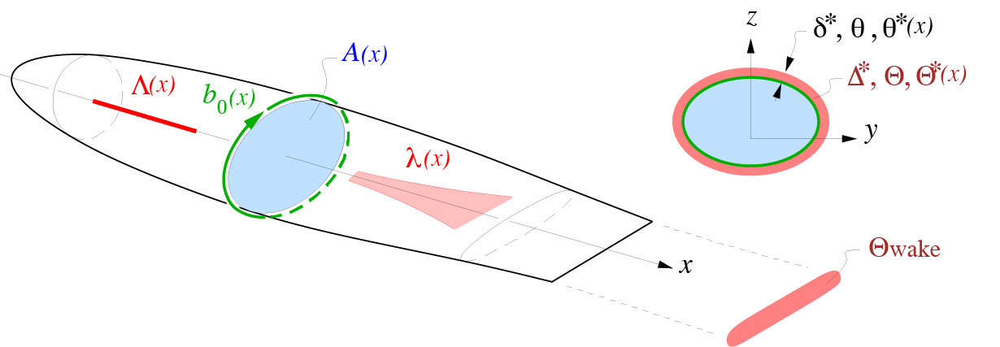
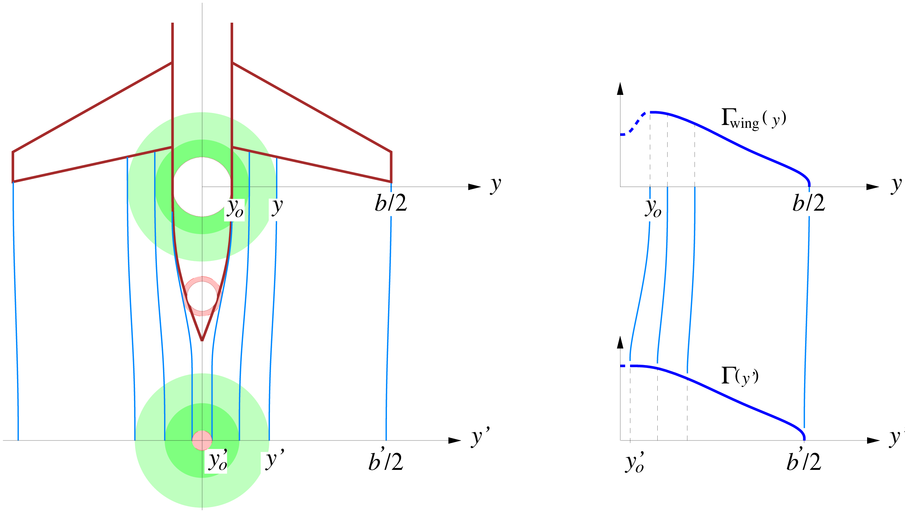
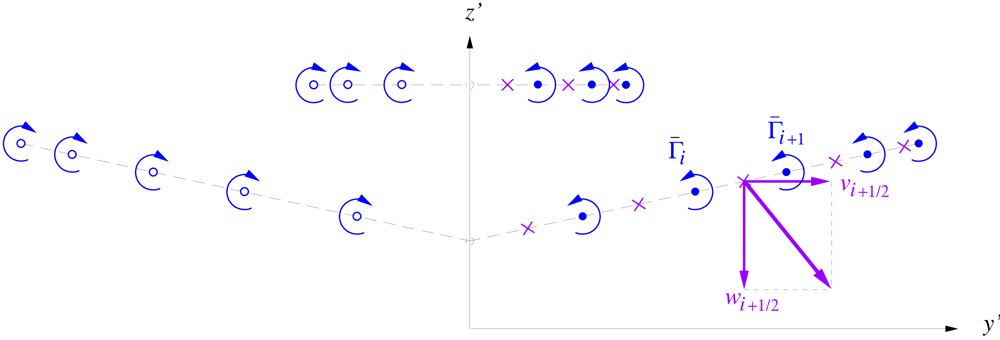

Drag
The key drag contributions are assumed to come from the fuselage, wing, and tail surfaces, and the lift-induced drag calculated at the Trefftz plane. Wave drag is not explicitly modelled.
Axisymmetric fuselage drag
The fuselage profile drag is determined by a quasi-axisymmetric coupled viscous-inviscid calculation. See Simplified Viscous/Inviscid Analysis for Nearly-Axisymmetric Bodies by M. Drela.
This method does not require any wetted area approximations or fineness-ratio correlations, but does require the geometry to be specified in the form of a cross-sectional area distribution $A{\scriptstyle (x)}$ and a perimeter distribution $b_0{\scriptstyle (x)}$, shown in the Figure below. For a round cross-section these are, of course, related. To allow treating more general fuselage cross-sections, they are assumed to be specified separately. The cross section sizes and shapes can vary along the body, provided the variation is reasonably smooth.

📖 Theory - axisymmetric fuselage profile drag
The viscous calculation produces displacement, momentum, and kinetic energy areas $\Delta^*, \Theta, \Theta^* {\scriptstyle (x)}$.
The cross-sectional area over the center cylindrical portion is $A_{\rm fuse}$, which has already been defined by
\[\begin{aligned} A_{\rm fuse} = \left[ \pi + n_{\rm fweb}\left( 2\theta_{\rm fb}+ \sin 2 \theta_{\rm fb}\right) \right] R_{\rm fuse}^2 \;+\; 2 \left[ R_{\rm fuse}+ n_{\rm fweb}w_{\rm fb}\right] \Delta R_{\rm fuse}. \end{aligned}\]
This also defines the radius of the equivalent round cylinder. $\begin{aligned} R_{\rm cyl}& = & \sqrt{\frac{A_{\rm fuse}}{\pi}} \end{aligned}.$
The equivalent radii over the tapering nose and radius are then defined via the following convenient functions.
\[\begin{aligned} R {\scriptstyle (x)}& = & \left\{ \begin{array}{lcl} \displaystyle R_{\rm cyl} \left[ \: 1 - \left( \frac{x_{{\rm blend}_1} \!-\! x}{x_{{\rm blend}_1} \!-\! x_{\rm nose}} \right)^{\!\! a} \; \right]^{\! 1/a} & , & x_{\rm nose}< x < x_{{\rm blend}_1} \\[1.0em] \displaystyle R_{\rm cyl} & , & x_{{\rm blend}_1} < x < x_{{\rm blend}_{\,2}} \\[0.5em] \displaystyle R_{\rm cyl} \left[ \: 1 - \left( \frac{x \!-\! x_{{\rm blend}_{\,2}}}{x_{\rm end} \!-\! x_{{\rm blend}_{\, 2}}} \right)^{\!\! b} \; \right] & , & x_{{\rm blend}_{\,2}} < x < x_{\rm tail} \end{array} \right. \\ a & \simeq 1.6 & \\ b & \simeq 2.0 & \end{aligned}\]
The $x_{{\rm blend}_1}$ and $x_{{\rm blend}_{\,2}}$ locations are the nose and tailcone blend points, and do not necessarily have to be exactly the same as the $x_{{\rm shell}_1}$ and $x_{{\rm shell}_{\,2}}$ locations which define the loaded pressure shell. Likewise, $x_{\rm end}$ is the aerodynamic endpoint of the tailcone, and is distinct from its structural endpoint $x_{\rm conend}$. The $a$ and $b$ constant values above give reasonable typical fuselage shapes.
If the fuselage is nearly round, the necessary area and perimeter distributions follow immediately.
\[\begin{aligned} A {\scriptstyle (x)}& = & \pi \, {R{\scriptstyle (x)}}^2 \\ b_0 {\scriptstyle (x)}& = & 2 \pi R {\scriptstyle (x)} \end{aligned}\]
This would be suitably modified for non-circular cross-sections.
With this geometry definition, the viscous/inviscid calculation procedure provides the momentum and kinetic energy area distributions along the body and wake,
\[\begin{aligned} \left\{ \Theta {\scriptstyle (s)}\, , \: \Theta^* {\scriptstyle (s)}\right\} & = & f_{\rm f_{excr}} \: {\cal F}(M_{{\scriptscriptstyle \infty}}, Re_\ell\, ; \, A {\scriptstyle (x)}, b_0 {\scriptstyle (x)}) \end{aligned}\]
where ${\cal F}$ denotes the overall viscous/inviscid calculation procedure, and $f_{\rm f_{excr}} \geq 1$ is an empirical factor to allow for fuselage excrescence drag sources.
Specific values of interest are the momentum area $\Theta_{\rm wake}$ at the wake numerical endpoint $s_{\rm wake}$, the far-downstream momentum area $\Theta_{\scriptscriptstyle \infty}$, and the kinetic energy area $\Theta_{\scriptscriptstyle T\!E}$ at the body endpoint or trailing edge.
\[\begin{aligned} \Theta_{\rm wake}& = & \Theta (s_{\rm wake}) \\ H_{\rm avg} & = & {\textstyle \frac{1}{2}}\left[ H(s_{\rm wake}) + 1 + (\gamma\!-\!1) M_{{\scriptscriptstyle \infty}}^2 \right] \\ \Theta_{\scriptscriptstyle \infty}& = & \Theta_{\rm wake} \left( \frac{u_e (s_{\rm wake})}{V_{\!{\scriptscriptstyle \infty}}} \right)^{H_{\rm avg}} \\ \Theta^*_{\scriptscriptstyle T\!E}& = & \Theta^*(s_{\scriptscriptstyle T\!E}) \end{aligned}\]
The equation above is the Squire-Young formula, with $H_{\rm avg}$ being the average shape parameter between the end of the wake and far downstream.
The fuselage surface + wake dissipated power in the absence of BLI is then evaluated as follows, consistent with the usual wake momentum defect relations.
\[\begin{aligned} C'_{\!D_{\rm fuse}} & \equiv & \frac{\Phi_{\rm surf}-P_{V_{\rm surf}} + \Phi_{\rm wake}-P_{V_{\rm wake}}} {{\textstyle \frac{1}{2}}\rho_{\scriptscriptstyle \infty}V_{\!{\scriptscriptstyle \infty}}^3 S} \hspace{6ex} \rm{(without BLI)} \hspace{-9.0ex} \\ C'_{\!D_{\rm fuse}} & = & \frac{D_{\rm fuse}}{{\textstyle \frac{1}{2}}\rho_{\scriptscriptstyle \infty}V_{\!{\scriptscriptstyle \infty}}^2 S} \;=\; \frac{2 \Theta_{\scriptscriptstyle \infty}}{S} \hspace{17ex} \rm{(without BLI)} \hspace{-9.0ex} \end{aligned}\]
If BLI is present at or near the trailing edge, the upstream boundary layer and corresponding surface dissipation $\Phi_{\rm surf}$ will be mostly unaffected. But the viscous fluid flowing into the wake is now reduced by the ingestion fraction ${f_{\rm {\scriptscriptstyle BLI}_{\scriptstyle \,f}}}$, so that the wake dissipation $\Phi_{\rm wake}$ will be reduced by the same fraction. This then gives the following overall fuselage dissipation coefficient for the BLI case.
\[\begin{aligned} C_{\!D_{\rm fuse}} &\!=\! & \frac{\Phi_{\rm surf}\!-\!P_{V_{\rm surf}} \,+\, (\Phi_{\rm wake}\!-\!P_{V_{\rm wake}})(1\!-\!{f_{\rm {\scriptscriptstyle BLI}_{\scriptstyle \,f}}})} {{\textstyle \frac{1}{2}}\rho_{\scriptscriptstyle \infty}V_{\!{\scriptscriptstyle \infty}}^3 S} \hspace{3ex} \mathrm{(with BLI)} \hspace{-2ex} \\ C_{\!D_{\rm fuse}} & \!\simeq\! & C_{\!D_{\rm fuse}} \,-\, C_{\Phi_{\rm wake}} {f_{\rm {\scriptscriptstyle BLI}_{\scriptstyle \,f}}} \hspace{23ex} \mathrm{(with BLI)} \hspace{-2ex} \\[0.5em] \rm{where} \hspace{3ex} C_{\Phi_{\rm wake}} & \!=\! & \frac{2 \Theta_{\scriptscriptstyle \infty}}{S} \:-\: \frac{\Theta^*_{\scriptscriptstyle T\!E}}{S} \end{aligned}\]
TASOPT.aerodynamics._axisymm_flow — Method
_axisymm_flow(xnose, xend, xblend1, xblend2, Amax,
anose, btail, iclose,
Mach, nc, nldim,
xl, zl, sl, dyl, ql)Calculates compressible potential flow about a quasi-axisymmetric body, using a simple piecewise-constant source line. Formerly, axisol!().
🔃 Inputs and Outputs
Inputs:
xnose::Float64: X (axial) location of nose point.xend::Float64: X location of tail point.xblend1::Float64: X location of nose-section blend point.xblend2::Float64: X location of tail-section blend point.Amax::Float64: Maximum cross-sectional area.anose::Float64: Nose-section shape exponent.btail::Float64: Tail-section shape exponent.iclose::Integer: If 0, tail tapers to a point, otherwise to an edge.Mach::Float64: Freestream Mach number for Prandtl-Glauert.nc::Integer: Number of control points to be used.nldim::Integer: Max dimension of passed arrays.
Outputs:
nl::Integer: Number of output surface and wake points.ilte::Integer: Index of TE point.xl::Array{Float64}: X (axial) locations of surface segment endpoints.zl::Array{Float64}: Z (vertical) locations of surface segment endpoints.sl::Array{Float64}: Arc lengths along surface and wake.dyl::Array{Float64}: Half-width of edge-type tail section.ql::Array{Float64}: Velocities V/V_inf along surface and wake.
See theory above or Section 3 of Simplified Viscous/Inviscid Analysis for Nearly-Axisymmetric Bodies. See also fuselage_drag!.
TASOPT.aerodynamics._BL_station_system — Method
_BL_station_system(is_selfsimilar, is_laminar, is_wake, solves_direct, Mach, uinv, hksep,
x, b, rn, th, ds, ue,
h , h_th, h_ds,
hk, hk_th, hk_ds, hk_ue,
hc, hc_th, hc_ds, hc_ue,
hs, hs_th, hs_ds, hs_ue,
cf, cf_th, cf_ds, cf_ue,
di, di_th, di_ds, di_ue,
xm,bm,rnm,thm,dsm,uem,
hm , hm_thm, hm_dsm,
hkm, hkm_thm, hkm_dsm, hkm_uem,
hcm, hcm_thm, hcm_dsm, hcm_uem,
hsm, hsm_thm, hsm_dsm, hsm_uem,
cfm, cfm_thm, cfm_dsm, cfm_uem,
dim, dim_thm, dim_dsm, dim_uem)Computes Jacobian matrices for BL solution at an axial station. Called repeatedly by _axisymm_BL. Formerly, blsys!().
🔃 Inputs and Outputs
Inputs:
is_selfsimilar::Bool: Self-similar BL profile flag.is_laminar::Bool: Laminar flow flag.is_wake::Bool: In wake? Flag.solves_direct::Bool: Direct solution flag, with prescribed inviscid velocity $u_e = u_\mathrm{inv}$Mach::Float64: Mach number for compressibility.uinv::Float64: Inviscid velocity.x::Float64: Arc length.b::Float64: Lateral width of BL.rn::Float64: $dr/dn$, $= 0$ for 2D.th::Float64: Momentum thickness.ds::Float64: Displacement thickness.ue::Float64: Edge velocity.h::Float64: Shape parameter.hk::Float64: Kinematic shape parameter.hc::Float64: density shape parameter (Whitfield).hs::Float64: kinetic energy shape parameter.cf::Float64: Skin friction factor.di::Float64: Dissipation factor.
m denotes the previous point (minus one) in the upstream. _z denotes partial derivative with respect to z (z = th, ds, ue).
Outputs:
aa::Array{Float64, 3, 3}: Jacobian matrix (wrt current point vars).bb::Array{Float64, 3, 3}: Jacobian matrix (wrt previous point vars).rr::Array{Float64, 3}: Residual.
See Section 4 of Simplified Viscous/Inviscid Analysis for Nearly-Axisymmetric Bodies.
TASOPT.aerodynamics._axisymm_BL — Method
_axisymm_BL(ndim, n,ite, xi, bi, rni, uinv, Reyn, Mach, fexcr)Axisymmetric boundary layer + wake calculation routine. Uses specified inviscid velocity, corrects for viscous displacement to allow calculation of separated flow. Formerly, blax!().
🔃 Inputs and Outputs
Inputs:
ndim::Integer: physical array dimension.n::Integer: number of boundary layer + wake points.ite::Integer: index of trailing edge point, start of wake.xi::Array{Float64}: arc length array (BL coordinate).bi::Array{Float64}: lateral width of BL at surface (i.e., body perimeter). $b_i$ = 0 for wake, 1 for 2D.rni::Array{Float64}: $dr/dn$ to account for near-axisymmetric bodies, 0 for 2D.uinv::Array{Float64}: inviscid velocity, $u_{inv}$.Reyn::Float64: Reynolds number, $\rho_{ref} u_{ref} l_{ref} / \mu_{ref}$.Mach::Float64: Mach number, $M = u_{ref} / a_{ref}$.fexcr::Float64: excrescence multiplier applied to wall $c_f$, 1 for smooth wall.
Assumed units for all quantities:
l_ref: same unit as used for inputxi,bi.u_ref: freestream velocity.a_ref: freestream speed of sound.rho_ref: freestream density.mu_ref: freestream viscosity.
Outputs:
uei::Array{Float64}: edge velocity, ($u_{e,i} = u_{inv,i} +$ {displacement correction}).dsi::Array{Float64}: displacement thickness ($\delta^*$).thi::Array{Float64}: momentum thickness ($\theta$).tsi::Array{Float64}: kinetic energy thickness ($\theta^*$).dci::Array{Float64}: density flux thickness ($\delta^{**}$).cfi::Array{Float64}: skin friction coefficient, normalized with local $\rho$, $u$ ($c_{f,i}$).cdi::Array{Float64}: dissipation coefficient , normalized with local $\rho$,$u$ ($c_{\mathcal{D},i}$).cti::Array{Float64}: max shear-stress coefficient, normalized with local $\rho$,$u$ ($c_{t,i}$).hki::Array{Float64}: kinematic shape parameter ($H_{K,i}$).phi::Array{Float64}: integrated dissipation ($\Phi$).
Other outputs of interest can be computed as follows. These are in units of l_ref, rho_ref, u_ref
beffi: Effective perimeter, $b_{eff,i} = b_i + 2 \pi \delta^* dr/dn$.rhi: Edge density, $\rho_i = (1 + \frac{(\gamma-1)}{2}M^2 (1.0-u_{e,i}^2))^\frac{1}{(\gamma-1)}$.mdef: Total mass defect, $\rho_i u_{e,i} \delta^* b_{eff}$.Pdef: Total momentum defect, $\rho_i u_{e,i}^2 \theta b_{eff}$.Edef: Total kinetic energy defect, $\frac{1}{2} \rho_i u_{e,i}^3 \theta^* b_{eff}$.tauwb: Wall shear force/span, $\frac{\tau_w}{b} = \frac{1}{2} u_{e,i}^2 c_{f,i} b_{eff}$.Diss: Dissipation integral, $\rho_i u_{e,i}^3 c_{\mathcal{D},i} b_{eff,i}$.
Body profile drag D_p is the far-downstream momentum defect $P_\infty$, best obtained by applying Squire-Young to the last wake point, $i = n$ :
- $P_{end} = \rho_i u_{e,i}^2 \theta b_{eff}$
- $H_{end} = \delta^*/\theta$
- $H_{\infty} = 1 + (\gamma-1) M^2$
- $H_{avg} = \frac{1}{2} (H_{end} + H_{inf})$
- $P_{inf} = P_{end} u_{e,i}^{H_{avg}} = D_p$
See Section 4 of Simplified Viscous/Inviscid Analysis for Nearly-Axisymmetric Bodies. See also _BL_station_system and _BL_station_vars.
TASOPT.aerodynamics._BL_station_vars — Method
_BL_station_vars(is_selfsimilar, is_laminar, is_wake, Reyn, Mach, fexcr, x, θ, δs, ue)Returns the boundary layer variables needed for solution. Formerly, blvar!().
🔃 Inputs and Outputs
Inputs:
is_selfsimilar::Bool: Self-similar BL profile flag.is_laminar::Bool: Laminar flow flag.is_wake::Bool: In wake flag.Reyn::Float64: Reynolds number.Mach::Float64: Mach number for compressibility.fexcr::Float64: Excrescence factor.
Outputs:
h::Float64: Shape parameter.hk::Float64: Kinematic shape parameter.hc::Float64: Density shape parameter (Whitfield).hs::Float64: Kinetic energy shape parameter.cf::Float64: Skin friction factor.cd::Float64: Dissipation factor and their derivatives.
TASOPT.aerodynamics.fuselage_drag! — Method
fuselage_drag!(fuse, parg, para, ip)Calculates surface velocities, boundary layer, wake for a quasi-axisymmetric body in compressible flow. Formerly, fusebl!().
A compressible source line represents the potential flow. An integral BL formulation with lateral divergence represents the surface BL and wake. An added-source distribution represents the viscous displacement influence on the potential flow. The body shape is defined by its area and perimeter distributions A(x), b0(x), which are defined by the various geometric parameters in parg.
🔃 Inputs and Outputs
Inputs:
fuse::Fuselage: Fuselage model object.parg::AbstractArray{Float64}: Vector ofaircraftmodel geometry parameters.para::AbstractArray{Float64}: Vector ofaircraftmodel aerodynamic parameters.parm::AbstractArray{Float64}: Vector ofaircraftmodel mission parameters.ip::Integer: Index of flight point inpararrays.
Outputs:
- No explicit outputs. Computed drag values are saved to
paraofaircraftmodel.
See Simplified Viscous/Inviscid Analysis for Nearly-Axisymmetric Bodies. See also _axisymm_BL and _axisymm_flow.
Trefftz plane drag calculation
Trefftz plane analysis computes the induced drag from multiple lifting surfaces (wing + horizontal tail). The lift distributions are propagated downstream, accounting for streamline contraction from fuselage thickness variation as shown in the Figure below.
 Two shaded streamtubes are shown. Wake center radius $y'_o$ is nonzero due to the fuselage viscous wake displacement area.
The vorticity in the wake is numerically integrated at collocation points to determine the overall induced drag.

Trefftz Plane vortices $i,i\!+\!1 \ldots$ and collocation points $i\!+\!1/2$ used for velocity, impulse, and kinetic energy calculations. Left/right symmetry is exploited.
Multi-surface formulation
The induced drag calculation uses a discrete vortex method with a pre-computed influence matrix. For wing and tail surfaces, the system is:
\[\mathbf{A}\boldsymbol{\Gamma} = \mathbf{w}\]
where $\mathbf{A}$ is the aerodynamic influence matrix (purely geometric), $\boldsymbol{\Gamma}$ is the wake circulation vector, and $\mathbf{w}$ is the normal velocity at control points.
Each influence coefficient $A_{ij}$ represents the velocity induced at control point $i$ by a unit vortex at wake point $j$, including its mirror image:
\[A_{ij} = \frac{(\hat{\mathbf{x}} \times \mathbf{r}_{ij}) \cdot \hat{\mathbf{n}}_i}{|\mathbf{r}_{ij}|^2} - \frac{(\hat{\mathbf{x}} \times \mathbf{r}_{ij}^m) \cdot \hat{\mathbf{n}}_i}{|\mathbf{r}_{ij}^m|^2}\]
where $\mathbf{r}_{ij}$ is the vector from wake point $j$ to control point $i$, $\mathbf{r}_{ij}^m$ is the vector from the mirror image of wake point $j$, and $\hat{\mathbf{n}}_i$ is the unit normal of element $i$.
The influence matrix has block structure for wing-tail interactions:
\[\begin{bmatrix} \mathbf{A}_{\mathrm{ww}} & \mathbf{A}_{\mathrm{wt}} \\ \mathbf{A}_{\mathrm{tw}} & \mathbf{A}_{\mathrm{tt}} \end{bmatrix} \begin{bmatrix} \boldsymbol{\Gamma}_\mathrm{wing} \\ \boldsymbol{\Gamma}_\mathrm{tail} \end{bmatrix} = \begin{bmatrix} \mathbf{w}_\mathrm{wing} \\ \mathbf{w}_\mathrm{tail} \end{bmatrix}\]
The structure of this block matrix looks like:
\[\small{\left[ \begin{array}{c:c} \overbrace{\begin{bmatrix} a_{w_1,w_1} & a_{w_1,w_2}&\cdots & a_{w_1,w_{n_\mathrm{wing+1}}}\\ \vdots & \ddots & & \vdots\\ \vdots & & & \vdots \\ a_{w_{n_\mathrm{wing}},w_1} & a_{w_1,w_2}&\cdots & a_{w_{n_\mathrm{wing}},w_{n_\mathrm{wing+1}}}\\ \end{bmatrix}}^{\mathbf{A}_{n_\mathrm{wing}\times n_\mathrm{wing+1}}} & \overbrace{\begin{bmatrix} a_{w_1,t_1} & \cdots & a_{w_1,t_{n_\mathrm{tail+1}}} \\ \vdots & \ddots & \vdots \\ \vdots & & \vdots \\ a_{w_{n_\mathrm{wing}},t_1} &\cdots & a_{w_{n_\mathrm{wing}},t_{n_\mathrm{tail+1}}}\\ \end{bmatrix}}^{\mathbf{A}_{n_\mathrm{wing}\times n_\mathrm{tail+1}}} \\[2em] \hdashline \\ \underbrace{\begin{bmatrix} a_{t_1,w_1} & a_{t_1,w_2}&\cdots & a_{t_1,w_{n_\mathrm{wing+1}}}\\ \vdots & \ddots & & \vdots\\ a_{t_{n_\mathrm{tail}},w_1} & a_{t_1,w_2}&\cdots & a_{t_{n_\mathrm{tail}},w_{n_\mathrm{wing+1}}}\\ \end{bmatrix}}_{\mathbf{A}_{n_\mathrm{tail}\times n_\mathrm{wing+1}}} & \underbrace{\begin{bmatrix} a_{t_1,t_1} & \cdots & a_{t_1,t_{n_\mathrm{tail+1}}} \\ \vdots & \ddots & \vdots \\ a_{t_{n_\mathrm{tail}},t_1} &\cdots & a_{t_{n_\mathrm{tail}},t_{n_\mathrm{tail+1}}}\\ \end{bmatrix}}_{\mathbf{A}_{n_\mathrm{wing}\times n_\mathrm{tail+1}}} \end{array} \right] \quad \begin{bmatrix} \left.\begin{matrix} \Gamma_{w_1} \\ \Gamma_{w_2} \\ \vdots \\ \vdots \\ \Gamma_{w_{n_\mathrm{wing}}}\\ \Gamma_{w_{n_\mathrm{wing}+1}} \end{matrix}\right\} n_{\mathrm{wing}+1} \\[1em] \left.\begin{matrix} \Gamma_{t_1} \\ \Gamma_{t_2} \\ \vdots \\ \Gamma_{t_{n_\mathrm{tail}}}\\ \Gamma_{t_{n_\mathrm{tail}+1}} \end{matrix}\right\} n_{\mathrm{tail+1}} \end{bmatrix} = \begin{bmatrix} \left.\begin{matrix} w_{w_1} \\ w_{w_2} \\ \vdots \\ \vdots \\ w_{w_{n_\mathrm{wing}}} \end{matrix}\right\} n_\mathrm{wing} \\[1em] \left.\begin{matrix} w_{t_1} \\ w_{t_2} \\ \vdots \\ w_{t_{n_\mathrm{tail}}} \end{matrix}\right\} n_\mathrm{tail} \\ \end{bmatrix}}\]
The AIC matrix looks like:

Spanwise point distribution
Points are distributed using a cosine spacing transformation for accuracy at the wing tip where circulation changes rapidly. A "bunching" parameter $\beta \in [0,1]$ clusters points toward the root:
\[t_\mathrm{bunched} = t + \beta \cdot t(1-t)\]
where $t \in [0,1]$ is the normalized spanwise coordinate.
Wake contraction
Streamlines contract behind the fuselage due to mass conservation. Inside the fuselage region ($y \leq y_o$), a power-law contraction is used:
\[y' = y'_o \left(\frac{y}{y_o}\right)^{(y_o/y'_o)^2}\]
Outside the fuselage ($y > y_o$), contraction follows mass conservation:
\[y' = \sqrt{y^2 - y_o^2 + {y'_o}^2}\]
Configuration
Panel discretization and physical parameters are specified in the TOML input file:
[Options]
trefftz_resolution = "MEDIUM" # "COARSE", "MEDIUM", or "FINE"| Resolution | Wing panels | Tail panels | Accuracy |
|---|---|---|---|
COARSE | 29 | 12 | ~1.8% error |
MEDIUM | 56 | 24 | ~0.6% error |
FINE | 224 | 96 | Reference |
Advanced parameters (usually don't need to change):
[Options]
trefftz_k_tip = 16.0 # Tip loading exponent
trefftz_bunch = 0.5 # Panel clustering factor [0,1]
wing_root_contraction = 0.2 # Wake contraction at wing root
tail_root_contraction = 1.0 # Wake contraction at tail root📖 Theory - induced drag $C_{d,i}$
The induced drag is calculated using a discrete vortex Trefftz-Plane analysis. The circulation of the wing wake immediately behind the trailing edge is
\[\begin{aligned} \Gamma_{\!{\rm wing}} {\scriptstyle (\eta)} & = \frac{\tilde{p} {\scriptstyle (\eta)}}{\rho_{\scriptscriptstyle \infty}V_{\!{\scriptscriptstyle \infty}}} \; \simeq \; \frac{p {\scriptstyle (\eta)}}{\rho_{\scriptscriptstyle \infty}V_{\!{\scriptscriptstyle \infty}}} \, \sqrt{1 \!-\! \eta^{k_t}} \\ k_t & \simeq 16 \end{aligned}\]
where the approximation realistically represents the tip lift rolloff for typical taper ratios, and is consistent with the assumed $f_{L_{\scriptstyle t}}\simeq -0.05$ value for the tip lift loss factor. This circulation is convected into the wake along streamlines which will typically constrict behind the fuselage by continuity. The Figure above shows two possible aft fuselage taper shapes, giving two different wake constrictions.
An annular streamtube at the wing contracts to another annular streamtube in the wake with the same cross-sectional area. The $y$ and $y'$ locations on the wing and wake which are connected by a streamline are therefore related by the correspondence function.
\[\begin{aligned} y'{\scriptstyle (y)}& = & \sqrt{ y^2 - y_o^2 + {y'_o}^2} \end{aligned}\]
The Trefftz Plane circulation $\Gamma {\scriptstyle (y')}$ is then given by the coordinate shift. The mapping function $y'{\scriptstyle (y)}$ is not defined for $y \! < \! y_o$, so the circulation there is simply set from the $y_o$ value.
\[\begin{aligned} \Gamma_{\rm wake} {\scriptstyle (y')}& = & \left\{ \begin{array}{lcl} \Gamma_{\!{\rm wing}} \left( y {\scriptstyle (y')}\right) & , & y \!>\! y_o \\ \Gamma_{\!{\rm wing}} \left( y_o \right) \end{array} \right. \end{aligned}\]
The Trefftz Plane analysis uses point vortices. The circulation ([Gamwake]) is evaluated at the midpoints of $n$ intervals along the wake trace, spaced more or less evenly in the Glauert angle to give a cosine distribution in physical space. The wake's vertical $z$ positions are simply taken directly from the wing.
\[\begin{aligned} \theta_{i+1/2} & = & \frac{\pi}{2} \, \frac{i-1/2}{n} \hspace{2ex} , \hspace{2ex} i = 1 \ldots n \\ y_{i+1/2} & = & \frac{b}{2} \, \cos \theta_{i+1/2} \\ y'_{i+1/2} & = & \sqrt{y_{i+1/2}^2 - y_o^2 + {y'_o}^2} \\ z'_{i+1/2} & = & z_{i+1/2} \\ \Gamma_{\!i+1/2} & = & \Gamma_{\!{\rm wing}} (y_{i+1/2}) \end{aligned}\]
The locations of $n+1$ trailing vortices are computed similarly.
\[\begin{aligned} \theta_i & = & \frac{\pi}{2} \, \frac{i-1}{n} \hspace{2ex} , \hspace{2ex} i = 1 \ldots n\!+\!1 \\ y_i & = & \frac{b}{2} \, \cos \theta_i \\ y'_i & = & \sqrt{y_i^2 - y_o^2 + {y'_o}^2} \\ z'_i & = & z_i \end{aligned}\]
The circulations of these trailing vortices are the differences of the adjacent bound circulations, with the circulation beyond the tips effectively zero.
\[\begin{aligned} \bar{\Gamma}_{\!i} & = & \left\{ \begin{array}{lcl} \hspace{6.5ex} -\Gamma_{\!i-1/2} & , & i = 1 \hspace{3.5em} \mathrm{(left tip)} \\ \Gamma_{\!i+1/2}-\Gamma_{\!i-1/2} & , & i = 2 \ldots n \\ \Gamma_{\!i+1/2} & , & i = n\!+\!1 \hspace{2em} \mathrm{(right tip)} \end{array} \right. \end{aligned}\]
The above definitions are also applied to the horizontal tail, with its discrete points simply appended to the list and $n$ increased accordingly.
The Trefftz plane calculation proceeds by first calculating the $y$-$z$ wake velocity components at the $y'_{i+1/2},z'_{i+1/2}$ interval midpoints, induced by all the trailing vortices and their left-side images.
\[\begin{aligned} v_{i+1/2} & = & \sum_{j=1}^{n+1} \frac{\bar{\Gamma}_{\!j}}{2\pi} \left[ \frac{-(z'_{i+1/2}\!-\!z'_j)} {(y'_{i+1/2}\!-\!y'_j)^2 + (z'_{i+1/2}\!-\!z'_j)^2} \,-\, \frac{-(z'_{i+1/2}\!-\!z'_j)} {(y'_{i+1/2}\!+\!y'_j)^2 + (z'_{i+1/2}\!-\!z'_j)^2} \right] \hspace{2em} \\ w_{i+1/2} & = & \sum_{j=1}^{n+1} \frac{\bar{\Gamma}_{\!j}}{2\pi} \left[ \frac{ y'_{i+1/2}\!-\!y'_j} {(y'_{i+1/2}\!-\!y'_j)^2 + (z'_{i+1/2}\!-\!z'_j)^2} \,-\, \frac{ y'_{i+1/2}\!+\!y'_j} {(y'_{i+1/2}\!+\!y'_j)^2 + (z'_{i+1/2}\!-\!z'_j)^2} \right] \end{aligned}\]
The overall lift and induced drag are then computed using the Trefftz Plane vertical impulse and kinetic energy. The sums are doubled to account for the left side image.
\[\begin{aligned} C_{\!L_{\scriptscriptstyle T\!P}} & = & \frac{2}{{\textstyle \frac{1}{2}}\rho_{\scriptscriptstyle \infty}V_{\!{\scriptscriptstyle \infty}}^2 S} \: \sum_{i=1}^{n} \: \rho_{\scriptscriptstyle \infty}V_{\!{\scriptscriptstyle \infty}}\, \Gamma_{\!i+1/2} \: (y'_{i+1}-y'_i) \\ C_{\!D_{\scriptscriptstyle T\!P}} & = & \frac{2}{{\textstyle \frac{1}{2}}\rho_{\scriptscriptstyle \infty}V_{\!{\scriptscriptstyle \infty}}^2 S} \: \sum_{i=1}^{n} -\frac{\rho_{\scriptscriptstyle \infty}}{2} \, \Gamma_{\!i+1/2} \left[ w_{i+1/2} \,(y'_{i+1}\!-\!y'_i) \:-\:v_{i+1/2} \,(z'_{i+1}\!-\!z'_i) \right] \end{aligned}\]
To minimize any modeling and numerical errors incurred in the wake contraction model and the point-vortex summations, the final induced drag value is scaled by the square of the surface-integral and Trefftz-Plane drag values.
\[\begin{aligned} C_{\!D_i} & = & C_{\!D_{\scriptscriptstyle T\!P}} \left(\frac{C_{\!L}}{C_{\!L_{\scriptscriptstyle T\!P}}} \right)^{\!2} \end{aligned}\]
This is equivalent to using the Trefftz Plane analysis to calculate the span efficiency rather than the actual induced drag coefficient.
TASOPT.aerodynamics.TrefftzPlaneConfig — Type
TrefftzPlaneConfigConfiguration for Trefftz plane induced drag analysis. Contains both panel discretization and analysis constants/ parameters.
Example
config = TrefftzPlaneConfig(
wing_panels = SurfaceDiscretization(40, 12, 6),
tail_panels = SurfaceDiscretization(20, 0, 4),
k_tip = 16.0,
bunch = 0.5,
wing_root_contraction = 0.2,
tail_root_contraction = 1.0
)TASOPT.aerodynamics.SurfaceDiscretization — Type
Struct to hold the discretization parameters for surface panels in the far field drag estimates in the Trefftz Plane.
TASOPT.aerodynamics.get_trefftz_config — Function
get_trefftz_config(quality::String; k_tip=16.0, bunch=0.5, wing_root_contraction=0.2, tail_root_contraction=1.0)Create a TrefftzPlaneConfig.
🔃 Inputs and Outputs
Inputs:
quality::String: Discretization quality level ("COARSE", "MEDIUM", or "FINE").k_tip::Float64=16.0: Tip loading exponent (controls circulation decay at wing tips).bunch::Float64=0.5: Center clustering factor ∈ [0,1] (controls spanwise panel spacing near root).wing_root_contraction::Float64=0.2: Wing root streamline contraction factor (stream tube contraction near fuselage).tail_root_contraction::Float64=1.0: Tail root streamline contraction factor (typically 1.0 = no contraction).
Outputs:
TrefftzPlaneConfig: Complete configuration for Trefftz plane induced drag analysis.
- "FINE" (328 panels): Reference accuracy, slowest
- Wing: 160 outer, 48 inner, 24 image
- Tail: 80 outer, 0 inner, 16 image
- "MEDIUM" (84 panels): ~0.6% higher CDi vs FINE,
- Wing: 40 outer, 12 inner, 6 image
- Tail: 20 outer, 0 inner, 4 image
- "COARSE" (43 panels): ~1.8% higher CDi vs FINE, fastest
- Wing: 20 outer, 6 inner, 3 image
- Tail: 10 outer, 0 inner, 2 image
TASOPT.aerodynamics.induced_drag! — Function
induced_drag!(para, wing, htail, trefftz_config)Computes the induced drag via the Trefftz plane using a discrete vortex method. Formerly, cditrp!() but now broken up into smaller functions.
🔃 Inputs and Outputs
Inputs:
para::AbstractArray{Float64}: Array ofaircraftmodel aerodynamic parameters.wing::TASOPT.Wing: Wing Structure.htail::TASOPT.Tail: Htail Structure.trefftz_config::TrefftzPlaneConfig: Trefftz plane analysis configuration (panel discretization and analysis parameters).
Outputs:
- No explicit outputs. Computed induced drag value and span efficiency are saved to
paraofaircraftmodel.
Wake geometry types
TASOPT.aerodynamics.WakeSystem — Type
struct WakeSystem{NP, NE}A complete wake system with N wake points forming N-1 wake elements.
Type Parameters
points::StaticArraysCore.SVector{NP, StaticArraysCore.SVector{2, Float64}} where NPelements::StaticArraysCore.SVector{NE, TASOPT.aerodynamics.WakeElement} where NEinfluence_matrix::Matrix{Float64}
The influence_matrix is purely geometric! So compute once and reuse it for different loading conditions. For each element-point pair, the coefficient is:
\[\left(\hat{x} \times (\mathbf{r}_{cp} - \mathbf{r}_{wp})\right) \cdot \hat{n}\]
where:
- $\hat{x}$ is the unit vector in x-direction
- $\mathbf{r}_{cp}$ is the control point position vector
- $\mathbf{r}_{wp}$ is the wake point position vector
- $\hat{n}$ is the unit normal to the wake element
TASOPT.aerodynamics.WakeElement — Type
struct WakeElementRepresents a single wake element defined by two points in the y-z plane and a control point. Note the control point does not have to be the midpoint, but it defaults to that if nothing is provided.
Fields
p1: Starting point of the wake elementp2: Ending point of the wake elementcontrol_point: Control point (midpoint) of the elementlength: Length of elementΔy: y-extent of elementΔz: z-extent of elementunit_normal: Unit normal vector to the element
It store a few more things inside WakeElement to help with calculations later. The unit normal is computed as [Δz, -Δy]/|Δs| where Δs is the vector connecting the end points.
TASOPT.aerodynamics.calculate_influence_coefficient — Function
calculate_influence_coefficient(r_vec, normal)Returns the 2D vortex influence coefficient induced at a control point by a unit vortex at the wake point.
r_vec is the displacement vector [Δy, Δz] from the vortex to the evaluation point. ⟹n⋅(x̂ × r)/|r|², = (-ny*z + nz*y)/|r|² ⟸ x̂ × r = [-z, y]
If $\left|r^2\right|$ is below a threshold (MIN_DISTANCE_SQUARED), the value is clipped to zero to avoid singularities.
Helper functions
TASOPT.aerodynamics.bunch_transform — Function
bunch_transform(t, bunch)Apply bunching transformation to input t ∈ \[0,1\].
Transforms t to cluster points near the center (t=0.5) when bunch > 0. The transformation is: t_bunched = t + bunch * t * (1 - t)
🔃 Inputs and Outputs
Inputs:
t::Float64: Original normalized angle ∈ [0,1].bunch::Float64: Clustering factor ∈ [0,1]. Higher values cluster more points near center.
Outputs:
t_bunched::Float64: Transformed parameter value.
See also inv_bunch_transform.
TASOPT.aerodynamics.inv_bunch_transform — Function
inv_bunch_transform(t_bunched, bunch)Inverse of the bunching transformation. Recovers original t from bunched value.
Solves t_bunched = t + bunch * t * (1 - t) for t using the quadratic formula. See also bunch_transform.
TASOPT.aerodynamics.calculate_wake_circulation! — Function
calculate_wake_circulation!(gw, gc, ifrst, ilast, nsurf)Compute wake vortex circulation from bound circulation γ_wake = -dΓ/dy.
At each panel edge, the change in bound circulation is shed into the wake:
- Root:
gw = 0(no upstream circulation at the center of the fuselage) - Interior:
gw[i] = gc[i-1] - gc[i] - Tip:
gw[i] = gc[i-1]
TASOPT.aerodynamics.scale_circulation! — Function
scale_circulation!(gc, gw, yp, ifrst, ilast, CLsurfsp, bref, Sref, nsurf)Scale circulation distribution to match specified specified lift coefficient for each surface.
Wing and tail surfaces
Lifting surface drag is determined via wing_profiledrag_scaled (when constant airfoil section cdf and cdp are already determined), and wing_profiledrag_direct (when an explicit modelling and integration is desired). Airfoil performance is accessed via a lookup of precomputed airfoil data, airfun.
TASOPT.aerodynamics.wing_profiledrag_direct — Method
wing_profiledrag_direct(wing, γt, γs,
Mach, CL, CLhtail,
Reco, aRexp, kSuns, fexcd,
fduo, fdus, fdut)Calculates wing or tail surface profile CD by calculating the performance of wing segments explicitly via airfoil data (found in [./src/air/C.air] and accessed by [airfun], [airtable]). Called by aircraft_drag! if computes_wing_direct flag set to true. Formerly, surfcd2().
🔃 Inputs and Outputs
Inputs:
Wing::TASOPT.Wing: Wing Structure.γt::Float64: Outer-panel load taper ratio pt/po.γs::Float64: Inner-panel load taper ratio ps/po.Mach::Float64: Mach number.CL::Float64: Wing CL.CLhtail::Float64: Htail CL.Reco::Float64: Reynolds number for co.aRexp::Float64: Re-scaling exponent.kSuns::Float64: Shock-unsweep area constant.fexcd::Float64: Excrescence cd scaling factor.fduo::Float64,fdus::Float64,fdut::Float64: Velocity-change fractions at wing root, break ("snag"), and tip due to fuselage flow.
Outputs:
clpo::Float64,clps::Float64,clpt::Float64: Perpendicular sectional lift coefficient at wing root, break ("snag"), and tip.CDfwing::Float64: Friction profile cd in perp. plane.CDpwing::Float64: Pressure profile cd in perp. plane.CDwing::Float64: Overall profile CD.CDover::Float64: Fuselage added CD due to lift carryover.
See Sections 2.14.3 and 3.8.3 of TASOPT Technical Desc. See also aircraft_drag!, wing_profiledrag_scaled, [wing_CM], and [airfun].
TASOPT.aerodynamics.wing_profiledrag_scaled — Method
wing_profiledrag_scaled(S,
b, bs, bo,
λt, λs, sweep,
co, cdf, cdp,
Reco, Reref,
aRexp, kSuns, fCDcen)Computes wing or tail surface profile CD from pre-computed chord quantities and corrections. Called by aircraft_drag! if computes_wing_direct flag set to false. Formerly, surfcd().
🔃 Inputs and Outputs
Inputs:
S::Float64: reference area.b::Float64: span.bs::Float64: outer panel break span.bo::Float64: wing-root (fuselage) span.λt::Float64: outer-panel taper ratio $ct/co$.λs::Float64: inner-panel taper ratio $cs/co$.sweep::Float64: wing sweep, degrees.co::Float64: wing root chord.cdf::Float64: friction profile cd.cdp::Float64: pressure profile cd.Reco::Float64: Reynolds number for co.Reref::Float64: reference Reynolds number for cd scaling.aRexp::Float64: Re-scaling exponent.kSuns::Float64: shock-unsweep area constant.fCDcen::Float64: related to fraction of wing BLI (see Eqns. 619 - 621).
Outputs:
CDsurf: overall profile CD.CDover: fuselage added CD due to lift carryover.
See Sections 2.14.3 and 3.8.3 of the TASOPT Technical Desc.
Airfoil section data
The wing airfoil performance is represented by a parameterized transonic airfoil family spanning a range of thicknesses, whose performance is determined by 2D viscous/inviscid CFD calculation for a range of lift coefficients and Mach numbers. Together with suitable sweep corrections, this gives reliable profile+wave drag of the wing in cruise and high climb and high descent.
The pressure and friction drag coefficients for the wing are obtained from the 2D drag database via cubic interpolation. For the databases provided, each airfoil has been designed (by Mark Drela) for a well-defined transonic drag rise, so that the database returns $c_{d_f}$ and $c_{d_p}$ values representative of the best transonic airfoil technology.
Specifically, the perpendicular-plane friction and pressure drag coefficients are then obtained from the database having the form
\[\begin{aligned} c_{d_f} & = & f_{\rm w_{excr}} \: \bar{c}_{d_f}(c_{\ell_{\scriptscriptstyle \perp}},M_{\scriptscriptstyle \perp}, {\textstyle \frac{t}{c}} ) \left( \frac{R\!e_c}{R\!e_{\rm ref}} \right)^{\! a_{\scriptscriptstyle Re}} \\ c_{d_p} & = & f_{\rm w_{excr}} \: \bar{c}_{d_p}(c_{\ell_{\scriptscriptstyle \perp}},M_{\scriptscriptstyle \perp}, {\textstyle \frac{t}{c}} ) \left( \frac{R\!e_c}{R\!e_{\rm ref}} \right)^{\! a_{\scriptscriptstyle Re}} \\ \mathrm{where} \hspace{5ex} M_{\scriptscriptstyle \perp}& = & M_{{\scriptscriptstyle \infty}}\, \cos \Lambda \\ \textstyle \frac{t}{c} & = & \bar{h} \\ R\!e_c& = & \frac{\rho_{\scriptscriptstyle \infty}V_{\!{\scriptscriptstyle \infty}}\,c}{\mu_{\scriptscriptstyle \infty}} \\ a_{\scriptscriptstyle Re}& \simeq & -0.15 \end{aligned}\]
and $f_{\rm w_{excr}} \geq 1$ is an empirical specified factor to account for wing excrescence drag sources, and $R\!e_{\rm ref}$ is a reference Reynolds number at which the database functions $\bar{c}_{d_f}, \bar{c}_{d_p}$ were computed. The chord Reynolds number $R\!e_c$ could of course be treated as an additional parameter in the database, but at a considerable increase in the size of the database and the computational effort needed to construct it. The value of the Re-scaling exponent $a_{\scriptscriptstyle Re}\simeq -0.15$ is appropriate for fully-turbulent flow. See the theory 📖 block below for more details.
📖 Theory - Airfoil database lookup
The drag database
The airfoil drag database (e.g., C.air) store the 2D airfoil section drag ($c_{d,p},\ c_{d,f}$) and pitching moment ($c_m$) as a function of:
- airfoil thickness/chord ratio, $\tau = \frac{t}{c}$,
- section lift coefficient, $c_l$, and
- Mach number, $M$.
The airtable function builds an airfoil structure that stores the database $\tau, c_l, M$ as well as the derivatives at the knots (as described below) to use for cubic interpolation.
Cubic interpolation
Below is a terse description of the cubic interpolation as relevant to the drag interpolation. There are several online resources available for a more in-depth description of the topic.
The cubic polynomials are represented as:
\[\newcommand{\im}{{i-1}} \newcommand{\ip}{{i+1}} \newcommand{\p}[1]{{#1 + 1}} \newcommand{\m}[1]{{#1 - 1}} q_i(t) = (1-t)y_\m{i} + ty_i + t(1-t)\left((1-t)a_i - tb_i\right),\\\]
where,
\[\newcommand{\im}{{i-1}} \newcommand{\ip}{{i+1}} \newcommand{\p}[1]{{#1 + 1}} \newcommand{\m}[1]{{#1 - 1}} \begin{aligned} t &= \frac{x- x_\im}{x_i - x_\im}\\ a_i &= k_\m{i}(x_i - x_\m{i}) - (y_i - y_\m{i}),\\ b_i &= k_i(x_i - x_\m{i}) - (y_i - y_\m{i}) \end{aligned}\]
and
\[k_i = \left. \frac{\mathrm{d} y}{\mathrm{d} x} \right|_i\]
is the slope at the $i^{th}$ point in the interpolation array.
These slopes (in each direction) are calculated and stored in the airfoil.A structure by the airtable function.
For brevity only an example of how these are stored is depicted below, the interested user may directly read airtable to see the matrix structure where the knots are stored. Here is an example of taking a slice of the 3-D array storing $c_{d_p}$ at a fixed $c_l = c_{l_i}$ (the data is really a 4-D array with each of the drag components, $c_{d,p},\ c_{d,f}$, and $c_m$ being stored along the 4$^\mathrm{th}$ dimension),
\[\newcommand{\pder}[3]{\frac{\partial^{#1} #2}{\partial #3^{#1}} } \begin{aligned} \mathbf{A}[c_{l_i}, :, :] &= \begin{bmatrix} \left. c_{d_p}\right._{\tau_1, M_1}& \left. c_{d_p}\right._ {\tau_1, M_2} & \cdots & \left. c_{d_p}\right._{\tau_1, M_N} \\ \left. c_{d_p}\right._{\tau_1, M_2}& \cdots& \cdots & \left. c_{d_p}\right._{\tau_2, M_N}\\ \vdots & \ddots & & \vdots \\ \left. c_{d_p}\right._{\tau_N, M_1}& \cdots& \cdots & \left. c_{d_p}\right._{\tau_N, M_N}\\ & \\ \end{bmatrix}\\ \\ \pder{}{\mathbf{A}[c_{l_i}, :, :] }{M} & = \begin{bmatrix} \left. \pder{}{c_{d_p}}{M} \right|_{1,1}& \cdots & \left. \pder{}{c_{d_p}}{M} \right|_{1,N} \\ \vdots & \ddots & \vdots \\ \left. \pder{}{c_{d_p}}{M} \right|_{N,1}& \cdots & \left. \pder{}{c_{d_p}}{M} \right|_{N,N} \\ & \\ \end{bmatrix}\\ \end{aligned}\]
Similarly, the slopes in the $\tau$ direction are stored in A_τ and the cross-derivatives are stored in A_M_τ and so on.
Evaluating the drag calculations
The stored slopes are used to evaluate the drag components by first locating the interval to use based on the $c_l, \tau, M$ values in the call to airfun, and then performing the interpolation in each dimension sequentially. For any values outside the provided database, a quadratic drag penalty is added.
TASOPT.aerodynamics.airtable — Method
airtable(fname)Reads airfoil file and outputs the matrix and splines as an airfoil.
The airfoil data is stored as a function of three variables, typically Mach number $\mathrm{Ma}$, lift coefficient $c_l$, and thickness to chord ratio $\tau$.
cdf(Ma, cl, τ), cdp(Ma, cl, τ), cm(Ma, cl, τ)TASOPT.aerodynamics.airfun — Method
airfun(cl, τ, Mach, air::airfoil)Looks up airfoil performance data at specified conditions, as precomputed and found in ./src/airfoil_data/.
🔃 Inputs and Outputs
Inputs:
cl::Float64: Airfoil section lift coefficient.τ::Float64: Airfoil section thickness-to-chord ratio.Mach::Float64: Mach number.air::TASOPT.aerodynamics.airfoil:airfoilstructure with performance data.
Outputs:
cdf::Float64: Airfoil section skin friction drag.cdp::Float64: Airfoil section pressure drag.cdw::Float64: Airfoil section wave drag (unused and assumed 0 here; placeholder left for future implementation).cm::Float64: Airfoil section pitching moment.
Total drag calculation
TASOPT.aerodynamics.aircraft_drag! — Method
aircraftdrag!(ac, imission, ip, computeswing_direct)
Calculates aircraft CD components for operating point, ipoint. If computes_wing_direct is true, computes wing cdf,cdp from airfoil database # iairf, otherwise uses default values in para array. Called by _mission_iteration!(), size_aircraft!, and takeoff!. Formerly, cdsum!().
The total drag is computed by
\[C_{D} = C_{D, i} + C_{D,fuse} + C_{D,wing} + C_{D,over} + C_{D,htail} + C_{D,vtail} + C_{D,strut} + C_{D,nace} + \Delta C_{D,BLI,f} + \Delta C_{D,BLI,w}\]
where:
- $C_{D,i}$ (
CDi) is the total induced drag including the wing and tail, - $C_{D,fuse}$ (
CDfuse) is the fuselage profile drage computed by solving a boundary layer integral equation, - $C_{D,wing}$ (
CDwing) is the wing profile drag (viscous + pressure) computed using airfoil data obtained from CFD, - $C_{D,over}$ (
CDover) is the fuselage added CD due to lift carryover, - $C_{D,htail}$ (
CDhtail) is the horizontal tail profile drag computed from assumed drag coefficients, - $C_{D,vtail}$ (
CDvtail) is the vertical tail profile drag computed from assumed drag coefficients, - $C_{D,strut}$ (
CDstrut) is the strut profile drag, - $C_{D,nace}$ (
CDnace) is the nacelle profile drag, - $\Delta C_{D,BLI,f}$ (
dCDBLIf) is related to the boundary layer ingestion on the fuselage, - and $\Delta C_{D,BLI,w}$ (
dCDBLIw) is related to the boundary layer ingestion on the wing.
Inputs: - ac::aircraft: aircraft data storage object - imission::Int64: mission index - ip::Int64: operating point index - computes_wing_direct::Bool: Flag if drag should be computed with wing_profiledrag_direct (true) or if para values should be used (false).
**Outputs:**
- No explicit outputs. Computed drag values are saved to `para` of `aircraft` model.See Section 2.14 of the TASOPT Technical Desc. See also fuselage_drag!, wing_profiledrag_direct, wing_profiledrag_scaled, cfturb, and induced_drag!.
Other utilities
TASOPT.aerodynamics.cfturb — Function
cfturb(Re)Returns the total $C_f$ for turbulent flat plate (one side) as a function of $\mathrm{Re}_l$
\[C_{f, turb} = \frac{0.523}{(\log(0.06\mathrm{Re}))^2} \]
For example, the turbulent flat plate $C_f$ for a $Re$ of $10e6$ can be calculated as follows:
Re = 10e6
cfturb(Re)0.002954557862895432